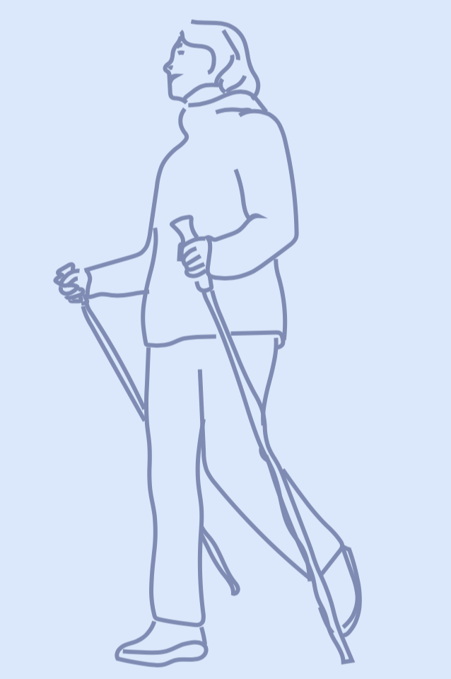

The COTIDIANA solution will enable holistic and efficient patient monitoring for clinical care, clinical research, and drug trials.

Objective condition monitoring
The COTIDIANA solution will use the smartphone sensors and logs to track:
Hand dexterity - using keyboard typing data, e.g., number of errors or typing speed, will enable clinicians to indirectly monitor increased pain in the hands or finger joint stiffness;
Mobility - using the smartphone accelerometer, will enable clinicians to track gait and physical activity which will provide more data about functional mobility or fatigue.
Mental health - using data from sociability patterns, e.g., number of made calls, SMS, and social media use, will document depression aggravation.
Mobile Patient-Reported Outcome Measures
COTIDIANA offers personalised Patient-Reported Outcome Measures, optimised for the smartphone screen, and validated in usability tests with older adult patients.
Patient monitoring at a distance
Dedicated platform for clinicians and clinical researchers that enables:
To monitor patient symptoms;
Personalize patient reported outcomes;
Prepare electronic case report form, for clinical research or drug trials